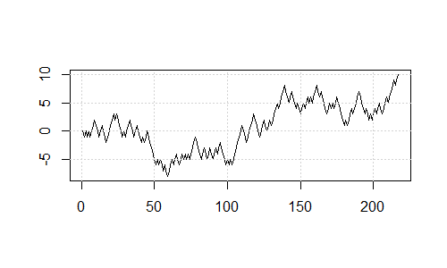
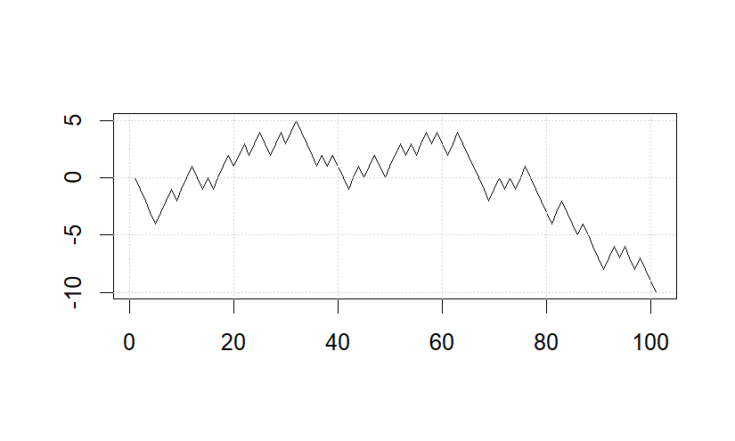
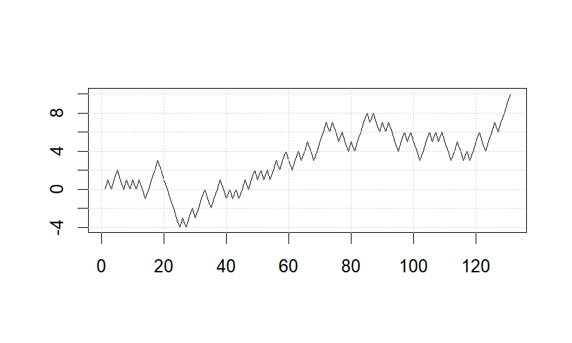
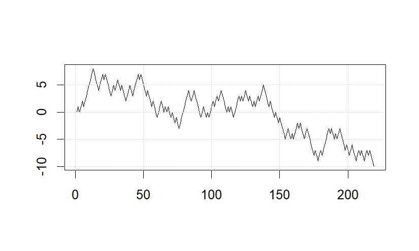
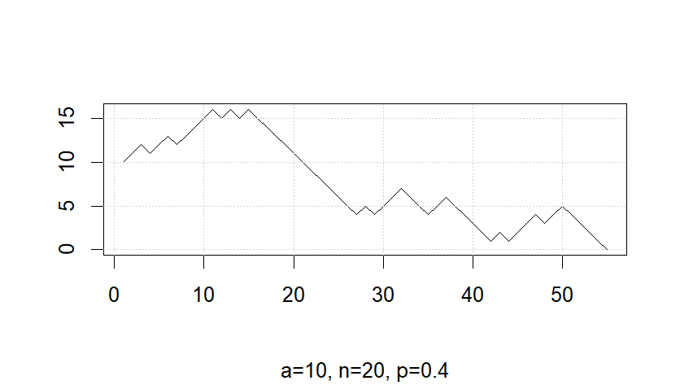
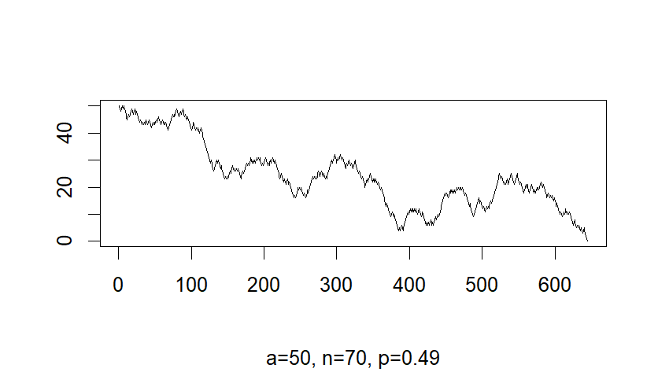
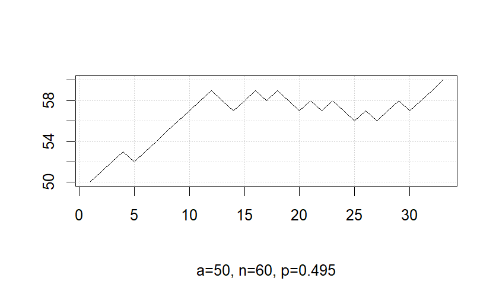
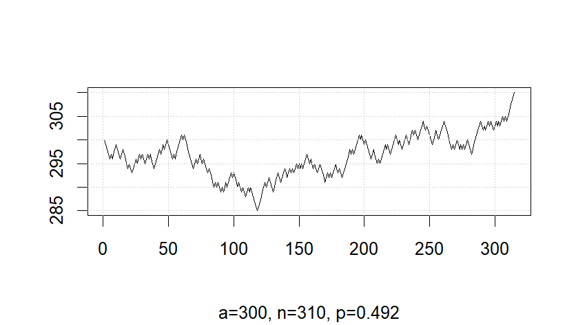

I saw a question in this file:
Write a function rndwlk, with an argument $k$, that simulates a
symmetric random walk, stopping when the walk reaches $k$ (or $−k$). After stopping it should return the entire walk.
Try calling plot(rndwlk(10)) a few times to see how it looks.
So I have written and plots some random walks.




random_walk = function(n) {
x_0 = 0
vec_path = c(x_0)
last = 0
while (abs(last)!= n){
vec_path = c(vec_path, last+sample(c(1,-1),1))
last = vec_path[length(vec_path)]
}
return(vec_path)
}
path = random_walk(10)
plot(path, type = "l", xlab = "", ylab = "")
grid()Since we have studied it in Example 6.3, I can modify the code above to simulate gambler's ruin. From the plots it is hard to earn money!




# The gambler initiates the game with money a, continues until he reaches n or broke, earn 1 dollar with prob. p
gambler = function(a,n,p) {
if (a<0 || a>=n || p<=0 || p>=1) {
return("Wrong Parameter")
}
x_0 = a
vec_path = c(a)
last = a
while (last != 0 && last != n){
vec_path = c(vec_path, last+sample(c(1,-1), 1, prob=c(p, 1-p)))
last = vec_path[length(vec_path)]
}
return(vec_path)
}
a=300
n=310
p=0.492
money = gambler(a,n,p)
plot(money, type = "l", xlab = "", ylab = "", sub = sprintf("a=%d, n=%d, p=%g", a, n, p))
grid()